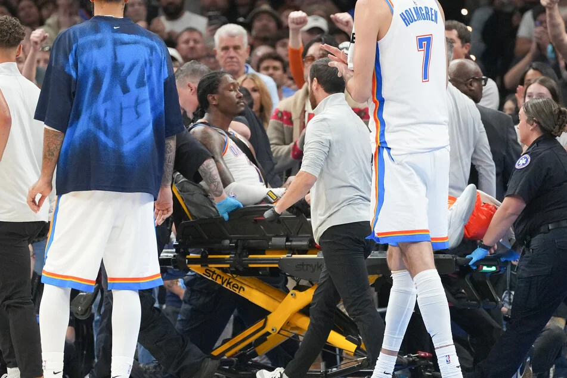

The NBA is experiencing a difficult start to the 2026–27 season, with injuries affecting several teams and star players. The Oklahoma City Thunder are missing Chet Holmgren and Jalen Williams, while the Minnesota Timberwolves are without Anthony Edwards and Donte DiVincenzo. The Orlando Magic are also dealing with injuries to Paolo Banchero and Jalen Suggs, making it harder for them to compete at full strength. Meanwhile, the Golden State Warriors will be without Jimmy Butler, Moses Moody and Kristaps Porziņģis for their matchup against the Miami Heat, although Stephen Curry is expected to lead the team offensively. With so many important players sidelined, teams are relying on their bench players to step up, and fans will be watching closely for updates on when these stars can return.
